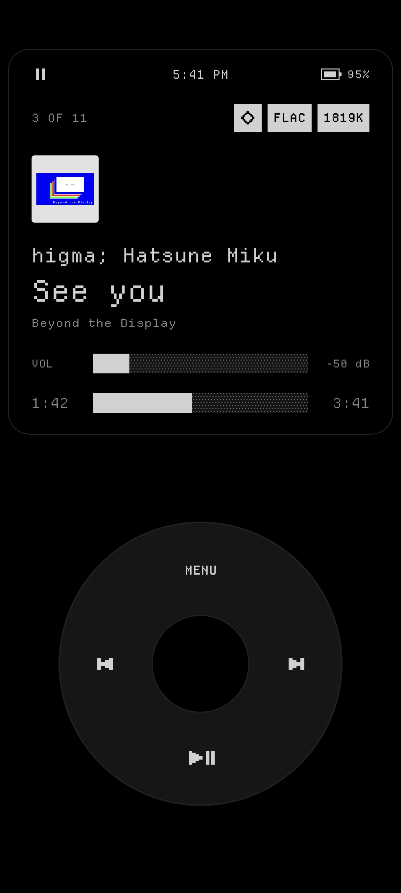
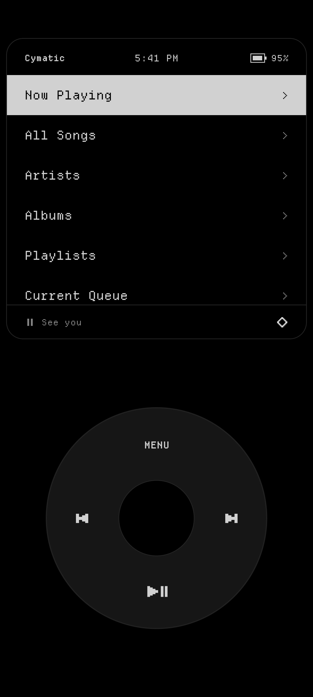
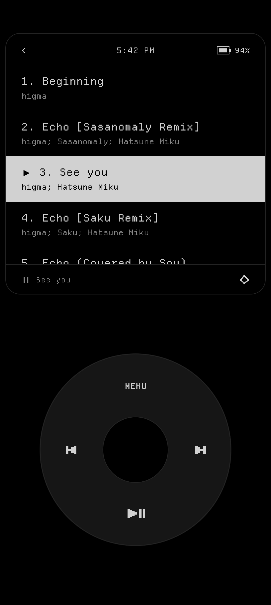
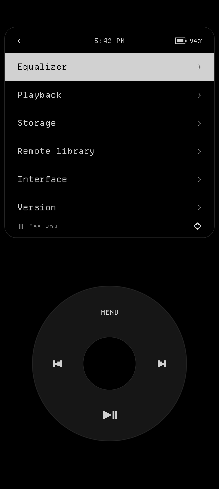

Click wheel & pixel UI
Spin the outer ring to scroll lists or adjust volume, or tap items directly. Adapts automatically to your device's light and dark theme.
A minimal Android music player with a click wheel, monochrome pixel interface, and direct USB DAC playback.




Spin the outer ring to scroll lists or adjust volume, or tap items directly. Adapts automatically to your device's light and dark theme.
An optional idle timeout blanks the screen to remove distractions. Touch anywhere to wake it and continue smoothly into a wheel gesture.
Browse local folders alongside your AudioStream remote library, with offline downloads and status filters.
Bypass Android's audio mixer for WAV, FLAC, ALAC, MP3, Ogg Vorbis/Opus, and DSF, with automatic fallback if a DAC config is unsupported.
Plays DSD64 through DSD512 (including 48 kHz-family rates) via 24-bit PCM conversion or bit-perfect DoP on compatible USB DACs.
Remembers volume per output device (with separate normal and direct USB levels), software EQ presets, and onboard hardware PEQ.
Enable Settings → Playback → USB audio → Direct USB and plug in your DAC. A hollow diamond icon confirms direct USB output is active, and Output info shows real-time format, sample rate, and USB stream health.
DSD output can be set per DAC to Automatic, Convert to PCM, or DoP. Supported USB dongles also get onboard hardware parametric EQ read/write right inside Cymatic.
Read USB & DSD guideFollow the quick first-launch walkthrough for spinning, selecting, and going back (or tap Skip).
Press Center to open All Songs. Tweak wheel size, haptics, and standby anytime in Settings.